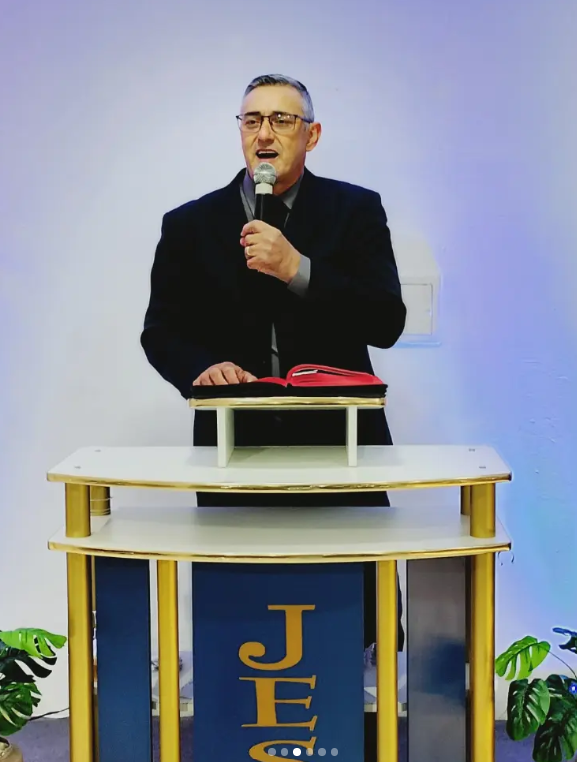
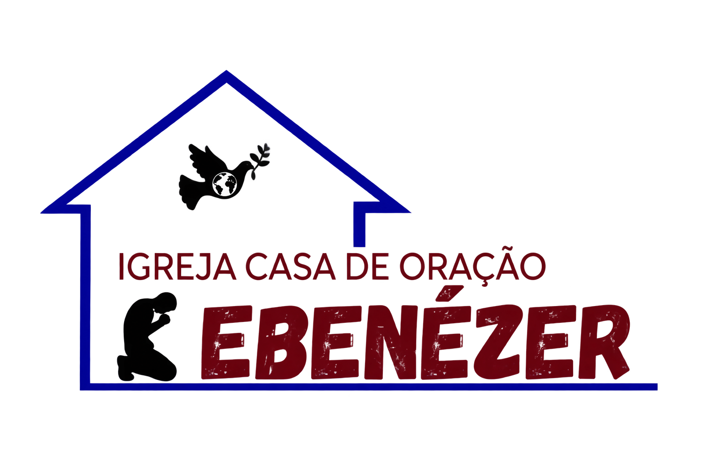
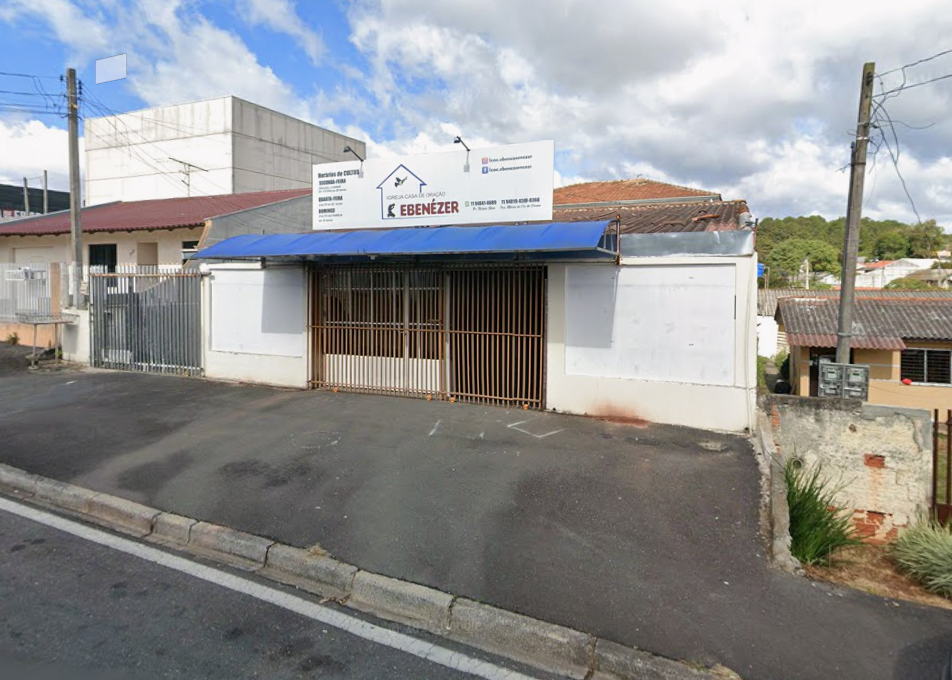
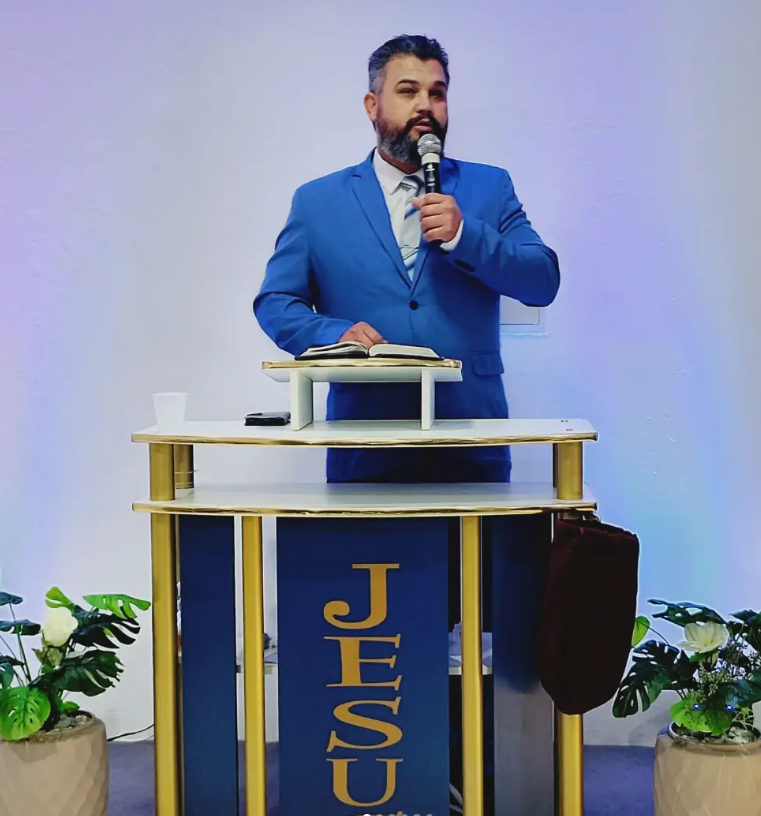
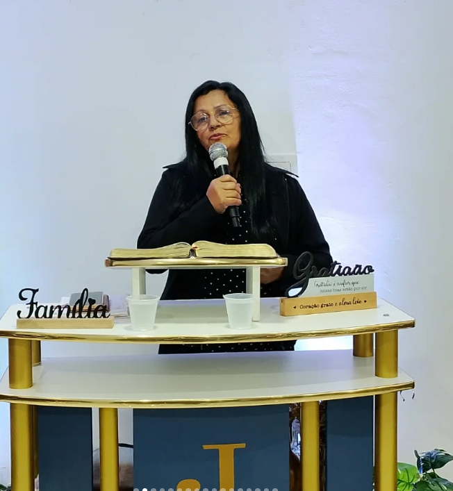
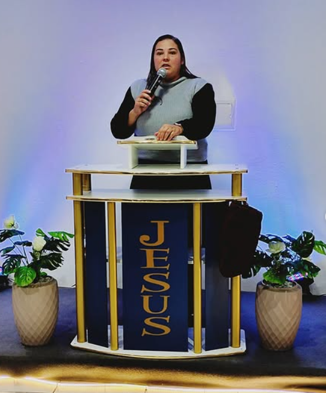
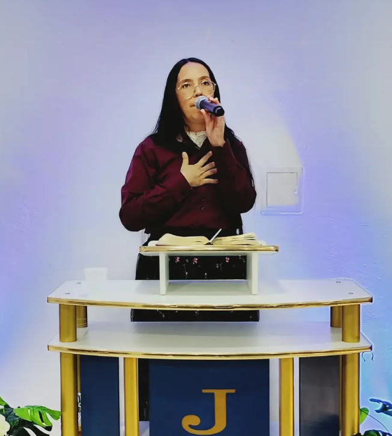

Pastor Presidente
Nelson Silva
Fundador da ICOE

CASA DE ORAÇÃO EbenézerCASA DE ORAÇÃO EBENÉZER
Seja bem-vindo à Casa de Oração Ebenézer.
Conheça nossa igreja e planeje sua visita.
Uma casa de portas abertas para receber você.

NOSSA ESSÊNCIA
Fundada em 2022 pelo Pastor Nelson silva e Pastora Maria do Carmo, a Casa de Oração Ebenézer nasceu numa garagem, onde ali passou alguns meses, e se mudou para um lugar aonde até hoje estamos. Nosso propósito é alcançar vidas, transformar almas e faze-las conhecer a Jesus Cristo e alcançar a salvação.

Pastor Presidente
Fundador da ICOE

Pastor
Primeiro Pastor Ungido na ICOE

Pastora
Pastora Presidenta e esposa do Pastor Nelson Silva

Pastora
Esposa do Pastor Bruno Trzaskos

Missionária
Primeira Missionária da ICOE
TEMPO DE ESTAR JUNTOS
Encontre aqui os dias e horários
dos nossos encontros.
20:00
20:00
19:00
CONHEÇA NOSSOS GRUPOS
Grupo Ágape liderado por Diaconisa Bianca de Jesus.
Grupo de Dança e Louvor Shalom, liderado por Missionária Dayane Lima.
Grupo de Louvor e Adoração Yadah, liderado por Missionária Dayane Lima.
Grupo Filhas de Jerusalem, liderado por Pastora Debora Trzaskos e o Ciclo de Oração por Pastora Maria do Carmo.
Grupo Remanescentes em Cristo, liderado por Diácono Edson Siqueira.
VIDA EM COMUNIDADE
ENCONTRE NOSSA CASA
Localização a confirmar.
Como chegarVAMOS CONVERSAR
Entre em contato, tire suas dúvidas
ou envie seu pedido de oração.